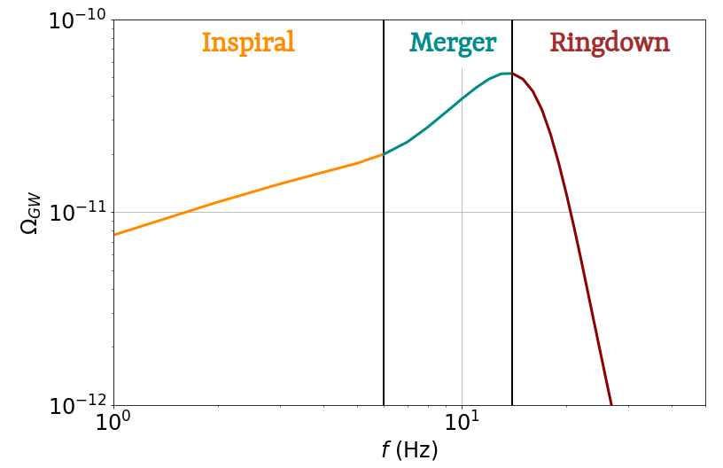

Black Hole Formation and the Puzzle of Mass and Time
Black holes are among the most enigmatic objects in the universe. They are born from the gravitational collapse of massive stars or through the mergers of compact objects. Today, they are observed through two main channels: electromagnetic observations (e.g. X-rays, radio jets, active galactic nuclei) and gravitational-wave detections, which have opened a new window on their formation and evolution.
Stellar Evolution and the Birth of Black Holes
The formation of a black hole is tightly connected to the initial mass and metallicity (chemical composition) of the progenitor star. Metallicity influences how much mass a star loses through stellar winds during its lifetime — a key factor in determining the mass of the resulting black hole:
- Low-metallicity stars lose little mass and are more likely to collapse into massive or intermediate-mass black holes.
- High-metallicity stars, on the other hand, shed a significant fraction of their mass through strong winds, often resulting in lighter black holes or even neutron stars.
Metallicity also encodes cosmic time: it increases with each generation of stars as heavy elements are synthesized and dispersed by supernovae.
The first generation of stars, known as Population III (Pop III) stars, formed in a pristine, metal-free Universe, roughly 200 to 500 million years after the Big Bang, corresponding to a redshift of z ≈ 20–10. Their unique composition led to extremely massive stellar bodies (typically 100–300 M☉, possibly more), with weak stellar winds and minimal mass loss. When these stars died, many are believed to have collapsed directly into black holes with masses ranging from 100 to 1000 M☉, placing them in the category of intermediate-mass black holes. These objects are prime candidates for the seeds of future supermassive black holes.
Later generations of stars, known as Population I and II (Pop I/II) stars, formed as the Universe became progressively enriched in heavy elements from earlier stellar explosions. Pop II stars began forming around redshift z ≈ 10–6 (~500 Myr to 1 Gyr after the Big Bang), while Pop I stars dominate from z ≈ 2 to the present (the last ~10 billion years). These younger stars, with higher metallicity, exhibit stronger stellar winds and follow different evolutionary paths, generally leading to lighter black hole remnants.
An additional layer of complexity arises with very massive stars due to the pair-instability process:
- Stars with helium core masses between ~64 and 135 M☉ are thought to undergo pair-instability supernovae, which lead to total disruption of the star, leaving behind no remnant black hole.
- This phenomenon creates a predicted mass gap in the black hole mass spectrum, between approximately 50 and 120 M☉. Finding black holes in this range could challenge existing models of stellar evolution, particularly those involving Pop III progenitors in the early Universe.
Observational Landscape
Current observations reveal a wide variety of black holes:
- Stellar-mass black holes (5–100 M☉), primarily detected via gravitational waves or X-ray binaries;
- Intermediate-mass black holes (100–3.10\(^5\) M☉), for which evidence remains sparse and debated;
- Massive black holes (3.10\(^5\)–10¹⁰ M☉), observed in galactic centers across the universe, even at high redshifts (z > 6).
Parameter space of observed black holes from electromagnetic and gravitational-wave observations (mass vs redshift).
This landscape raises two fundamental questions:
-
How can such massive black holes form so early in cosmic history?
Supermassive black holes have been observed less than a billion years after the Big Bang, but standard stellar evolution models struggle to explain their rapid growth. -
Why do we observe a “mass gap” in the intermediate-mass range?
While stellar-mass and supermassive black holes are well established, the population between ~100 and 10⁴ solar masses is largely uncharted. Is this due to detection limits, or does it reflect a genuine lack of formation pathways?
Addressing these questions requires new observational tools — and this is where gravitational waves play a key role.
Studies on Binary black holes formation and evolutions

Binary Black holes from Globular cluster
This project investigates how the internal dynamics and long-term evolution of globular clusters shape the mass, spin, and merger-rate distributions of black holes through repeated mergers. Image : Cluster Messier 15, credit: NASA, ESA

Binary black holes from active galactic nuclei
How does the presence of gas in active galactic nucleus (AGN) disks influence the growth of black holes through mergers? This study explores how gas hardening changes the mass and spin distribution of hierarchical black hole binaries. Credit : THEA, Columbia university

Angular momentum transportation : Model comparison through gravitational wave data.
Page not ready yes
Gravitational-Wave Observations of Black Hole Mergers
Gravitational waves (GWs) provide a direct probe of compact binary mergers, allowing us to observe black holes that would otherwise remain invisible. These signals are rich in astrophysical information and can be studied both individually and collectively.
Each binary black hole coalescence emits gravitational waves in three phases:
- Inspiral: the two black holes orbit each other, gradually losing energy via gravitational radiation. This phase encodes precise information about their masses and spins.
- Merger: the black holes collide and form a single, highly deformed object.
- Ringdown: the remnant settles into a stable black hole, emitting GWs at characteristic frequencies (quasi-normal modes).
There are two main observables from GW data:
1. Individual Merger Events
Individual mergers are detected through matched filtering, where a bank of theoretical waveforms is compared to the detector data. This method allows us to estimate the properties of each event (mass, spin, redshift, orientation) with high accuracy. Since the first detection in 2015 (GW150914), dozens of binary black hole mergers have been observed, providing constraints on black hole populations, formation channels, and cosmology.
2. The Astrophysical Gravitational-Wave Background
In addition to isolated events, the universe is filled with the stochastic gravitational-wave background (SGWB) — the superposition of countless unresolved mergers across cosmic history. This signal cannot be detected in a single detector. Instead, it is extracted statistically via cross-correlation between detectors in a network (e.g., LIGO, Virgo, KAGRA, Einstein Telescope).

Typical background from a population of binary black holes with masses around 40 M☉ and redshifts of 14 ± 4. One can distinguish the different phases of the coalescence through the characteristic shape of the spectrum.
The SGWB offers a unique window into:
- The merger rate history of compact binaries;
- Populations that are too faint or distant to resolve individually;
- Early-universe phenomena, such as the first generations of stars (Population III).
Together, these observations — from discrete signals to background noise — provide a comprehensive picture of black hole formation, growth, and distribution across space and time.
Studies related on gravitational wave backgrounds

Insights about Pop III stars from binary black holes contribution to the gravitational wave background.
To be written

Impact of star formation and evolution on the gravitational wave background.
Not ready yet

Prospects of background observations with Einstein Telescope
Footprints of binary black holes evolution environement on gravitational wave background in Einstein Telescope. A Princess study.